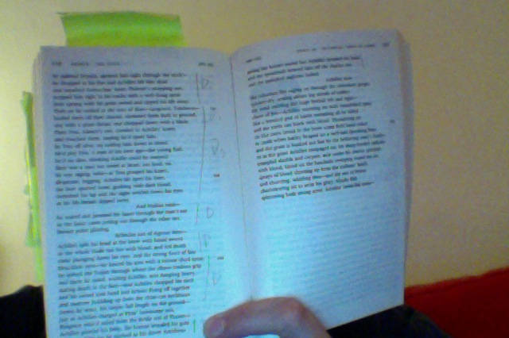

the hero was all over him, slashing out his life, slitting his belly open— a scooping slice at the navel and all his bowels spilled out on the ground, darkness swirled his eyes as he gasped his breath away.
246: Achilles kills Asteropaeus
the hero was all over him, slashing out his life, slitting his belly open— a scooping slice at the navel and all his bowels spilled out on the ground, darkness swirled his eyes as he gasped his breath away.
246: Achilles kills Asteropaeus
Drawing his sharp sword Achilles struck his collarbone just beside the neck and the two-edged blade drove home, plunging to the hilt— and down on the ground he sprawled, stretched facefirst and dark blood pouring out of him drenched the earth.
245: Achilles kills Lycaon

the son of Peleus charioteering on to seize his glory, bloody filth splattering both strong arms, Achilles invincible arms—
So yeah there were pretty much no non death bits in the last page or so of book 20.
Now. The final count down:
10…
Achilles pierced his belly, the bronze impaled his guts and out of his car he pitched as his driver Areithous swung the horse round but Achilles speared his back and the spearshaft heaved him off the chariot too and the panicked stallion bolted.
243 & 244: Achilles kills Rhigmus and Areithous
Deucalion next—he lanced his arm with a bronze shod spear, he splitted the Trojan through where the elbow-tendons grip and there he stood, waiting Achilles, arm dangling heavy, staring death in the face—and Achilles chopped his neck and his sword sent head and helmet flying off together and marrow bubbling up from the clean-cut neckbone. Down he went, his corpse full length on the ground—
242: Achilles kills Deucalion
“marrow bubbling up from the clean-cut neckbone” !
Echeclus son of Agenor next— Achilles split his head at the brow with hilted sword so the whole blade ran hot with blood, and red death came plunging down to his eyes, and the strong force of fate.
241: Achilles kills Echeclus
And Mulius next— he reared and jammed his lance through the man’s ear so the lance came jutting out through the other ear, bronze point glinting
240: Achilles kills Mulius
OK, this is sort of verging on slapstick now
Then Tros, Alastor’s son, crawled to Achilles’ knees and clutched them, hoping he’d spare him, let Tros off alive, no cutting him dow in blood, he’d pity Tros, a man of his own age—the young fool, he’d no idea, thinking Achilles could be swayed! Here was a man not sweet at heart, not kind,no, he was raging, wild—as Tros grasped his knees, desperate, begging, Achilles slit open his liver, the liver spurted loose, gushing with dark blood, drenched his lap and the night swirled down his eyes as his life breath slipped away.
239: Achilles kills Tros
Then on he rushed at the sons of Bias—Laogonus, Dardanus— hurled them off their chariot, slammed them both to the ground, one with a spear thrust, one chopped down with a blade.
237 & 238: Achilles kills Laogonus and Dardanus
Whirling he stabbed Dryops, speared him through the neck— he dropped at his feet and Achilles left him dead and smashed Demuchus’ knee, Philetor’s strapping son, stopped him right in his tracks with a well flung spear then sprang with his great sword and ripped his life away.
235 & 236: Achilles kills Dryops and Demuchus
Just as he shot past the matchless runner Achilles speared him straight in the back where his war-belt clasped, golden buckles clinching both halves of his breastplate— straight on through went the point and out the navel, down on his knees he dropped— screaming shrill as the world went black before him— clutched his bowels to his body, hunched and sank.
234: Achilles kills Polydorus
Hippodamas next, he leapt from his chariot fleeing before Achilles— Achilles’ spearshaft rammed him through the back and he gasped his life away, bellowing like some bull
233: Achilles kills Hippodamas
And next Achilles lunged at Demoleon, son of Antenor, a tough defensive fighter— he stabbed his temple and cleft his helmet’s cheekpiece. None of the bronze plate could hold it—boring through the metal and skull the bronze spearpoint pounded, Demoleon’s brains splattered all inside his casque, the Trojan beaten down in his fury.
232: Achilles kills Demoleon
and his first kill was Iphition … As the Trojan charged head-on Achilles speared him square in the brows—his whole skull split in half and down he crashed, Achilles exulting over him
231: Achilles kills Iphition
Finally Achilles!
he dragged his ruthless dagger across the boar’s throat. Talythybius whirled the carcass round about his head and slung it into the yawning gulf of the grey sea for swarming fish to eat.
Talythybius kills a boar
That’s all I got for you in book 19. I miss the happier times in earlier books when this kind of sacrifice would have been cooked in some mouthwatering way over an open fire.
Book 18 doesn’t have any slaughter. But it does have a totally fantastic passage describing the forging of Achilles’ new shield, for me probably the high point of the poem so far.
Hector speared him under the jaw and ear, knocking teeth out, shattering roots and all and split his tongue in half. He pitched from his car, the reins poured to the ground
231: Hector kills Coeranus
—a first rate drinking friend… As he sprang in flight the red-haired captain hit him, splitting his belt, and bronze went ripping through his flesh and down he went with a crash.
230: Menelaus kills Podes
He aimed and hurled and his spear’s long shadow flew and hit Aretus square in the balanced round shield— no blocking the shaft, the bronze rammed through, piercing his belt and gouging down his belly. As a burly farmhand wielding a whetted ax, chopping a field-ranging bull behind the horns, hacks through its whole hump and the beast heaves up then topples forward—so Atreus reared, heaving up then toppled down on his back. The slashing spear shuddered tense in his guts and the man was gone.
229: Automedon kills Aretus
—a flash of his lance and he hit a captain, Hippasus’ son Apisaon, slitting his liver, up under the midriff… His knees went limp, a man who’d marched from Paeonia, good fertile soil where he excelled all fighters, All but Asteropaeus—
228: Lycomedes kills Apisaon
—Aeneas lunged and speared Leocritus through, a son of Arisbas, Lycomedes’ die-hard friend.
227: Aeneas kills Leocritus
Ajax next— with a lunge he stabbed Phorcys, Phaenops’ warrior son bestriding Hippothous’ corpse—he ripped his belly, smashing his corslet just where the plates join and bronze spearhead spilled his entrails out and down went Phorcys, grasping, clawing the dust.
226: Telamonian Ajax kills Phorcys
Hector speared him now— the point split the collarbone, slashing through and out by the shoulder’s base, sticking out the back. He fell with a crash, his armor clanging round him.
225: Hector kills Scedius
No Trojans could save him now, strain as they might— Ajax son of Telamon charging quickly into the carnage speared him at close range through a bronze-cheeked helmet, the horsehair crest cracked wide open around the point, smashed by the massive spear and hand that drove it. His brains burst from the wound in sprays of blood soaking the weapons’ socket— his strength dissolved on the spot, his grip loose and he dropped the foot of brave Patroclus’ corpse.
224: Telamonian Ajax kills Hippothous
Menelaus rose with a bronze lance and a prayer to Father Zeus and lunging out at Euphorbus just dropping back, pierced the pit of his throat—leaning into it hard, his whole arm’s weight in the stroke to drive it home and the point went slicing through the tender neck. He fell with a crash, armor ringing against his ribs, his locks like the Graces’ locks splashed with blood, still braided tight with gold and silver clip, pinched in like a wasp’s waist. There he lay like an olive slip a farmer rears to strength on a lonely hilltop, drenching it down with water, a fine young stripling tree, and the winds stir it softly, rustling from every side, and it bursts with silver shoots— then suddenly out of nowhere a wind in gale force comes storming, rips it out of its trench, stretches it out on the earth— so Panthous’ stripling son lay sprawled in death, Euphorbus who hurled the strong ashen spear… Menelaus cut him down
223: Menelaus kills Euphorbus
So, entering the final straight. If you lost track here’s what just happened…
Deaths 184 - 222: Patroclus kills Pyraechmes, spear in the shoulder. Patroclus kills Areilycus, spear in the thigh. Menelaus kills Thoas, spear in the chest. Meges kills Amphiclus, spear in the leg. Antilochus kills Atymnius, spear in the side. Thrasymedes kills Maris, spear in the shoulder. Oilean Ajax kills Cleobulus, sword in the neck. Peneleus kills Lyco, sword in the neck. Meriones kills Acamas, spear in the shoulder. Idomeneus kills Erymas, spear in the mouth. Patroclus kills Pronous, spear in the chest. Patroclus kills Thestor, spear in the head. Patroclus kills Erylaus, rock on the head. Patroclus kills Erymas. Patroclus kills Amphoterus. Patroclus kills Epaltes. Patroclus kills Tlepolemus. Patroclus kills Echius. Patroclus kills Pyris. Patroclus kills Ipheus. Patroclus kills Euippus. Patroclus kills Polymelus. Patroclus kills Thrasymedes, spear in the gut. Patroclus kills Sarpedon, spear in the chest. Hector kills Epeigeus, rock on the head. Patroclus kills Sthenelaus , rock on the head. Glaucus kills Bathycles, spear in the chest. Meriones kills Laogonus, spear in the jaw. Patroclus kills Adrestus. Patroclus kills Autonous. Patroclus kills Echeclus. Patroclus kills Perimus. Patroclus kills Epistor. Patroclus kills Melanippus. Patroclus kills Elasus. Patroclus kills Mulius. Patroclus kills Pylantes. Patroclus kills Cebriones, rock in the head. Hector kills Patroclus
I’m like,
And Hector is just too much like,
Patroclus never saw him coming, moving across the deadly rout, shrouded in thick mist and on he came against him and looming up behind him now— slammed his broad shoulders and back with the god’s flat hand and his eyes spun as Apollo knocked the helmet off his head and under his horses hooves it tumbled, clattering on with it four forged horns and its hollow blank eyes and its plumes were all smeared in the bloody dust
…
And now, right at his back, close-up, a Dardan fighter speared him squarely between the shoulder blades with a sharp lance. Panthous’ son Euphorbus, the best of his own age at spears and a horseman’s skill and speed of foot, and even in this, his first attack in chariots— just learning the arts of war— he’d brought down twenty drivers of their cars. He was the first to launch a spear against you, Patroclus O my rider, but did not bring you down. Yanking out his ashen shaft from your body, back he dashed and lost himself in the crowds— the man would not stand up to Patroclus here in mortal combat, stripped, defenseless as he was. Patroclus stunned by the spear and the god’s crushing blow was weaving back to his own thronging comrades, trying to escape death…
Hector waiting watching the greathearted Patroclus trying to stagger free, seeing him wounded there with the sharp bronze came rushing into him right accross the lines and rammed his spearshaft home, stabbing deep in the bowels, and the brazen point went jutting straight out through Patroclus’ back. Down he crashed—horror gripped the Achaean armies.
222: Hector kills Patroclus (Assisted by Euphorbus and Apollo)
O my rider!
(Homer, I love the way you switch perspective and just address Patroclus straight on)
But he hit his driver— a bastard son of famed King Priam, Cebriones yanking the reigns back taut—right between the eyes. The sharp stone crushed both brows, the skull caved in and both eyes burst from their sockets, dropping down in the dust before his feet as the reinsman vaulted, plunging off his well-wrought car like a diver— Cebriones’ life breath left his bones behind
221: Patroclus kills Cebriones
Patroclus— who was the first you slaughtered, who the last when the great gods called you down to death? First Adrestus, then Autonus, then Echeclus, then Perimus, Megas’ son, Epistor and Melanippus, then in a flurry Elasus, Mulius and Pylartes— he killed them all but the rest were bent on flight.
212- 220: Patroclus kills Adrestus, Autonous, Echeclus, Perimus, Epistor, Melanippus, Elasus, Mulius and Pylartes